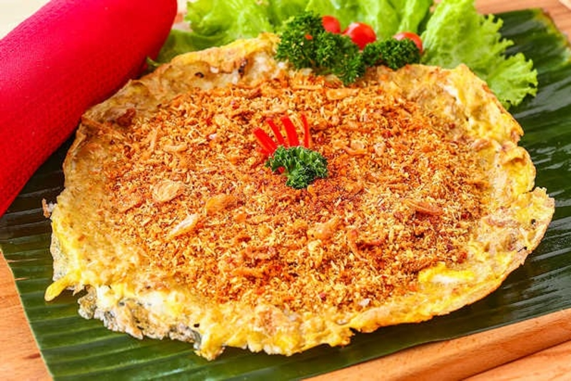

Monumen Nasional atau yang disingkat dengan Monas atau Tugu Monas adalah monumen peringatan setinggi 132 meter (433 kaki) yang didirikan untuk mengenang perlawanan dan perjuangan rakyat Indonesia untuk merebut kemerdekaan dari pemerintahan kolonial Hindia Belanda. Pembangunan monumen ini dimulai pada tanggal 17 Agustus 1961 di bawah perintah presiden Soekarno dan dibuka untuk umum pada tanggal 12 Juli 1975. Tugu ini dimahkotai lidah api yang dilapisi lembaran emas yang melambangkan semangat perjuangan yang menyala-nyala dari rakyat Indonesia. Monumen Nasional terletak tepat di tengah Lapangan Medan Merdeka, Jakarta Pusat.
Makanan Khas Jakarta

Kerak telur adalah makanan asli daerah Jakarta (Betawi), dengan bahan-bahan beras ketan putih, telur ayam atau bebek, ebi (udang kering yang diasinkan) yang disangrai kering ditambah bawang merah goreng, lalu diberi bumbu yang dihaluskan berupa kelapa sangrai, cabai merah, kencur, jahe, merica butiran, garam dan gula pasir. Kerak telor dapat ditemukan pada hari biasa. Anda bisa menemukan kerak telor di sekitar Kota Tua, Jakarta Barat. Menurut sejarah, Kerak Telor sudah ada dari zaman kolonial Belanda, kerak telor diciptakan oleh masyarakat Betawi secara tak sengaja Pada tahun 1970-an.
Ciri Khas Jakarta
Ondel-ondel adalah bentuk pertunjukan rakyat Betawi yang sering ditampilkan dalam pesta-pesta rakyat. Tampaknya ondel-ondel memerankan leluhur atau nenek moyang yang senantiasa menjaga anak cucunya atau penduduk suatu desa. Ondel-ondel yang berupa boneka besar itu tingginya sekitar 2,5 meter dengan garis tengah ± 80 cm, dibuat dari anyaman bambu yang disiapkan begitu rupa sehingga mudah dipikul dari dalamnya. Bagian wajah berupa topeng atau kedok, dengan rambut kepala dibuat dari ijuk. Wajah ondel-ondel laki-laki biasanya dicat dengan warna merah, sedangkan yang perempuan warna putih. Bentuk pertunjukan ini banyak persamaannya dengan yang ada di beberapa daerah lain.